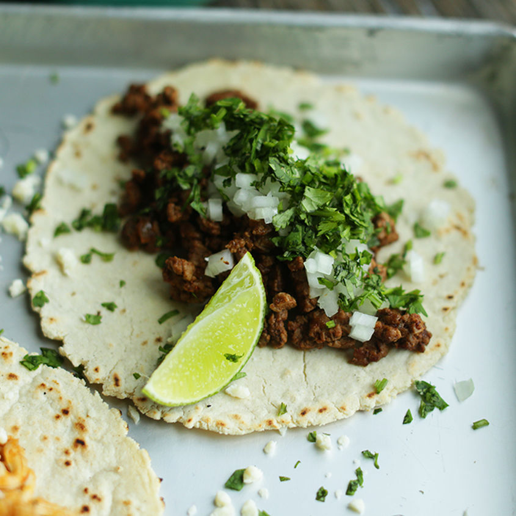

Street Tacos

What is it?
Ingredients
- 1 lb. flank steak, trimmed
- 2 cloves garlic, minced
- 1/4 cup chopped fresh cilantro
- 1/4 cup chopped fresh cilantro
- 1 tsp. chili powder
- 1/2 tsp. paprika
- 1/4 tsp. salt
- 1/4 tsp. black pepper
- Juice of 1 lime
- Corn tortillas
- Chopped onion
- Chopped fresh cilantro
- Lime wedges
- Salsa, hot sauce, and/or guacamole for serving
Steps
- In a small bowl, mix together the garlic, cilantro, cumin, chili powder, paprika, salt, black pepper, and lime juice.
- Rub the spice mixture all over the flank steak, cover, and let marinate in the fridge for at least 1 hour (or up to overnight).
- Preheat the grill to medium-high heat. Grill the steak for 5-7 minutes per side, or until it reaches your desired doneness. Let it rest for a few minutes before slicing thinly against the grain.
- Heat the corn tortillas on the grill or in a dry skillet until lightly charred and warmed through.
- To assemble the tacos, place a few slices of steak on a tortilla, then top with chopped onion, cilantro, and a squeeze of lime juice. Serve with salsa, hot sauce, and/or guacamole on the side.